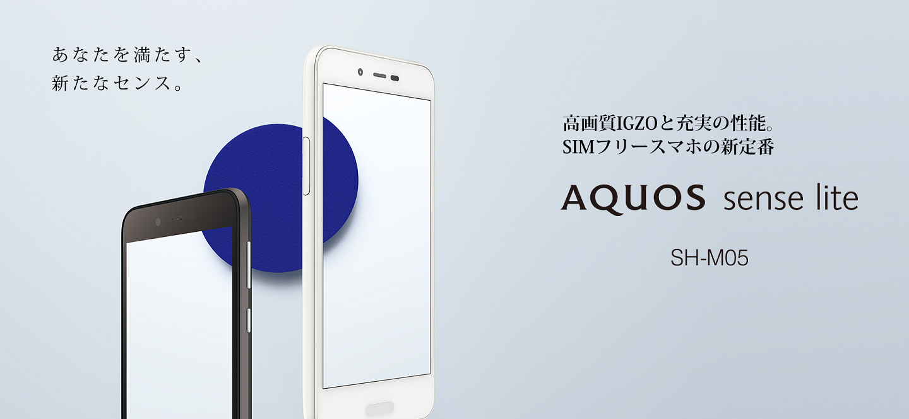
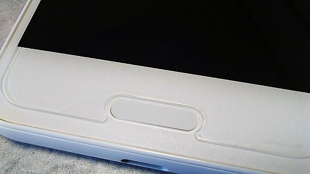

AQUOS sense lite レビュー
2017-12-10 12:06:00 +0900 JST
Categories: Gadget
iPhoneSE(が壊れた)から乗り換えました。
以前のSHARPから出る端末はガラスマに全力に振り切った端末を結構出していたのですが、最近はYmobile向けにAndroid oneを出したり、2年間のメジャーアップデート保証(Oreo対応を登場と同時に発表)したりと最近は買った後のアフターサポートをしっかりしている感じがしますね。
また最近はSonyもキャリアだけに端末を卸すのではなく、いくつかをSIMフリーモデルとして販売しているケースを増えてきました。今回のAQUOS sense liteもまさにそんな端末です。

スペック紹介及び開封の儀はいろんな人がしていると思うのでバッサリ割愛します。
しかしこの端末、久々に私がビビッときた端末です。
安い
まずは圧倒的な価格です。私はIIJ mio経由で購入しましたが、価格が3万切ってます。
SHARP AQUOS sense lite SH-M05 | 格安SIM/格安スマホのIIJmio
他のサイトでも3万前後で買えます。
この価格に対して決してスペックを妥協している点は1点を除いて特に見当たりません。
残念は点は後で紹介します。
こういった端末は購入後のメンテナンスは期待できないことが多いのですが・・・
↓(参考)こういった端末
「ARROWS M01」「ARROWS M305/KA4」に見た富士通の本気
我々としては、出荷した状態を担保しなければいけないと思っています。つまりOSのバージョンを変えることはありません。例えば100台導入した後にOSバージョンアップによって再度お客様が100台分の動作検証をしなければいけないのは、業務を止めることにもなりかねませんから。
AQUOS sense liteは公式で2年間で最大2回のメジャーアップデート保証を宣言しているので、少なくともOreoアップデートは確定です。最大2回というのがやや引っかかりますが、Oreoの次はAndroidのアップデート自体がどうなるのかわからないので様子見するしかないという感じでしょうか。
長く使える機能が充実している
- 防水防塵
- おサイフケータイ
- 指紋認証
- 2年OSアップデート保証
- USB type-C端子
と2年後を見ても決して古臭くならない割とガチ仕様になっています。
いろんな端末を乗り換えていく使い方より、1つの端末をずっと使い続けていきたいという人向けの端末ですね。その割に3万円は良い価格です。 他が高すぎる
- 防水防塵
必須ではないけど、あるといろいろ安心。むしろ濡れててもちゃんと操作できるのほうがメリットがでかいです。 - おサイフケータイ
以前はApple Watchでsuica使ってたのですが、おサイフは1回使うと戻れませんね・・・。必須です。 - 指紋認証
2年以上もパスワードロックはやってられないです。必須。 - 2年OSアップデート保証
デベロッパーとして必須。 - USB type-C端子 2年後にはさすがにほとんどがtype-Cになっていると思うのでこれは非常に良いポイントです。
デザイン
あまり多く語るところはないですが。
まず、非常に持ちやすいです。私は割と片手操作することが多いので、Xperiaのように角がとがっている端末は手に刺さって痛いのですが、これはほどよい丸みがあって普通に持ちやすいです。

写真だとわかりづらいのですが、ホワイトは真っ白な加工ではなく少しいろんな色がついています。この加工のおかげかあまりiPhoneっぽくならず、安っぽくもならない良いデザインだと思います。
指紋認証部分はボタンっぽく押せそうですがボタンではありません。でも触れることでホームと同じ挙動を割り当てることができます。指紋認証部分に触れるだけで画面ON->ロック解除は地味に便利です。
ソフトウェア
SIMフリー端末なので当然余計なソフトウェアはほとんどはいっていません。AQUOS便利機能のオートスクロールは邪魔なのでOFFにしたほうがよいでしょう。
ホームもAQUOS Homeでほぼ問題ないと思いますが、アプリを名前順で並び替えができない？ので私はGoogle Nowランチャーに切り替えました。
動作は普通に快適です。Chromeのスクロールにひっかかりありませんし、FEHやポケGO、ポケ森も普通に遊べます。アプリの起動もストレスないです。Googleアシスタントの起動に若干引っかかりがあるぐらいです。
AQUOSといえばフォントが割と独創的なラインナップですが、Notoも普通に搭載しているので不満はないです。
ヒカリエモーションはちょっと楽しいです。エモパーは1回も起動してないから知らん。
個人的な不満
メジャーアップデート保証の1つにOreoが含まれる
Oreo発表後にNougatで出すあたり若干ふざけんな感があります。Oreo発表が8月、senseは12月発売です。4ヶ月間なにしてたんだと言いたくなります。
しかしsenseをベースとしたAndroid oneはOreoがプリインとなっているだけに、恐らくOreo自体はもう対応が終わっていて何かしらのモジュールがOreoに対応していないのでそれ待ちという可能性があります。
Android oneになくてsenseにあるのはエポマーとおサイフケータイ機能なので恐らくおサイフのモジュールがOreoに対応してないんじゃないですかね。
ほんとAndroid Payにはがんばっていただきたいところです。
Wi-Fiの5Ghzに未対応
・・・は？という感じです。最初に書いたスペックを妥協しているとしたらここです。
これはほとんどのレビューサイトでも言及されておらず、公式サイトの仕様表に(2.4Ghzのみ)としれっと書かれているだけです。senseは5Ghzに対応しているだけになぜsense liteは5Ghzを削ったのか理解に苦しみます。ちなみにsenseも11acは未対応です。うーん。
はじめはチップが違うのかなと思ったのですが、CPU含め内部構造にほぼ違いがないのにもかかわらずなぜか削られています。
むしろSIMフリーを望む人ほど5Ghzを必要としそうな気もしそうなのですが。
まとめ
買いです。私は買いました。